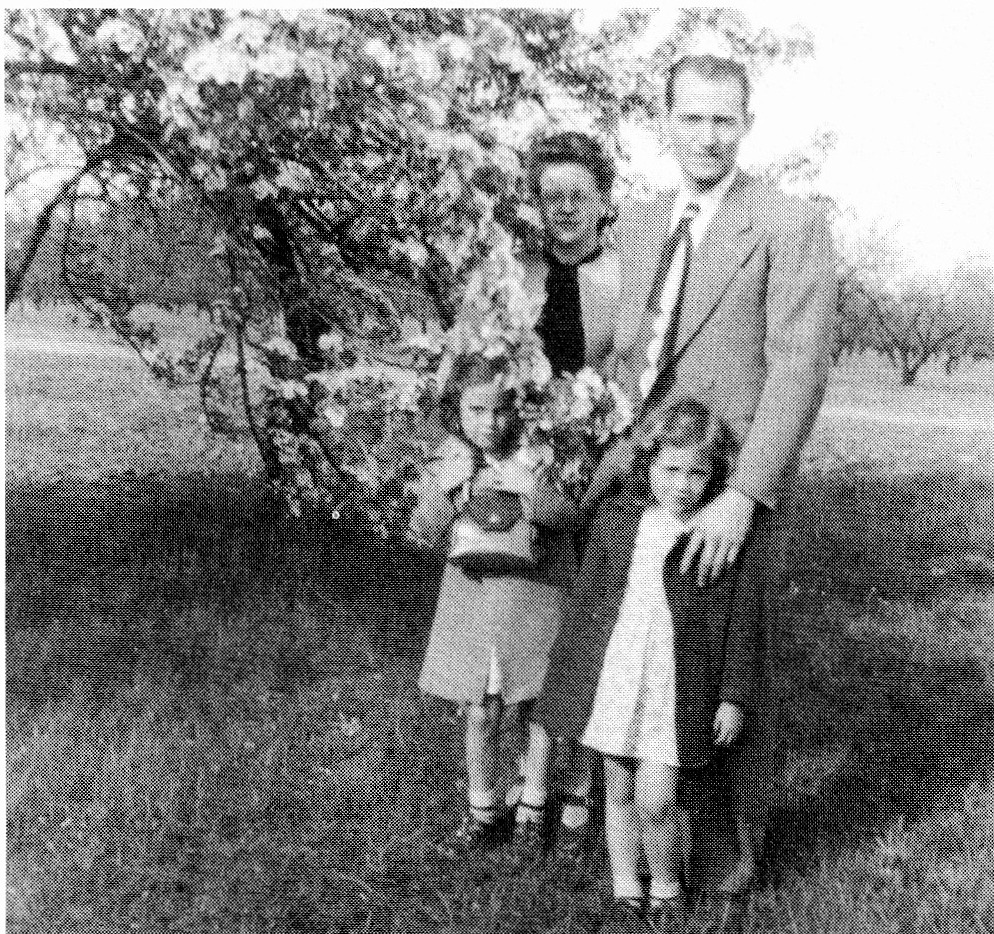
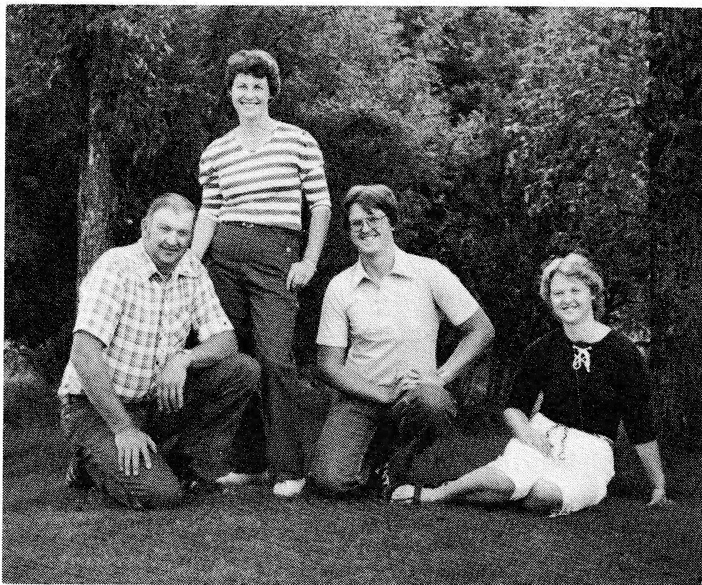
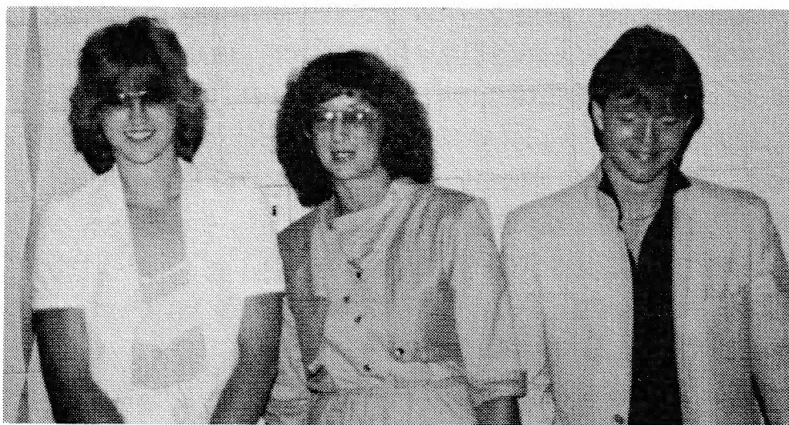

MARTIN ALPHONSE LESSARD
I was born on August 25, 1921. When we lived in Delmas, we went to a French school.
In the spring of 1928, we moved to the Hudson Bay area. We settled at Veillardville. It was bush country; I don't think there was twenty acres farmed in the entire settlement at that time.
I attended White Poplar School with Nellie Barteluk as my first teacher. Then we had several French teachers, some of whom were Mr. Roy, Mildred Beaudoin, Phillippe Le Scelleur, Arthur Villeneuve, among others. We walked to school and, though there was a lot of snow in the winter, walking wasn't too difficult for there were never any snowdrifts.
Later, we moved to the farm north of the C.N.R. tracks. Times were not easy and I remember going in to town, which was Hudson Bay, to peddle vegetables down the streets. We'd have radishes tied up in little bunches and onions, too. We sold whatever vegetables were in season.
One winter I hauled hay into town from the farm with the horse and sleigh. We'd get something like $10.00 a ton but we had to weigh it - otherwise the folks wouldn't believe we had a ton. It cost us two bits to have it weighed so, in the end, we would only get $9.75 for the hay.
One time I hauled a load of potatoes into town for Paul Bittalla, a bachelor neighbor. I'd been hauling hay and so I had the sleigh fixed so it wouldn't upset. We used to put runners on the outside so the hayrack wouldn't tip. It was March or early April, the beginning of spring breakup. Paul wanted to come over and help me take the hayrack off but I planned on putting hay in the bottom, then covering the potatoes with blankets. I figured the potatoes would be fine this way. However, Paul disagreed and insisted on coming over to help me put the wagon box on. So this is what we did. We loaded seventy-five to eighty bags of potatoes in the wagon with one or two tiers of potatoes above the box. Now this made a high and rather narrow load. When I got to Blanchard's, the other side of Jaszans', the load upset. Now instead of coming with me, Paul had decided to walk down the railroad tracks. I had to get a neighbor to help me take all those bags of potatoes out of the box so I could get the wagon box upright again. Paul Le Charity, who was living on the Turcotte farm, helped me. When I arrived in town, Paul Bittalla was already on his way out wondering what had happened to me. He was also concerned that the potatoes were frozen. However, I didn't think so as the sun was shining and it was a rather nice day. But when we rolled the potatoes down the chute at the Chinaman's, they made a strange noise. The Chinaman said, "Tink potatoes frozee." That load of potatoes would purchase staples for Paul for the coming year. Everyone needed a means to purchase tea, coffee, sugar and flour.
Although there was very little money, we were never hungry. There was always wild game and lots of wild berries. Everyone picked wild berries and lots of them because that was the only fruit that we had in the winter time. So, after you picked the berries, the women canned them to preserve them for the winter.
This particular time, Ma had a large dishpan which she made the bread in and it was full of strawberries. I came in late that night, about 11:30, and saw this great mound of strawberries which was white because she'd covered them with sugar. I thought that I might as well have myself a feed of berries. Now I had to do all this by moonlight as there were no electric lights back then. I got myself a big soup dish, filled it with the strawberries, then went to the cream jug and poured cream over my berries. I had myself a real good feed. After I was finished, I noticed the big, black hole in the middle of the pan where I had taken my berries out and I thought, "This doesn't look right." So, picking up a bag which I thought was sugar, I filled the hole up.
The next day Ma was cooking up the strawberries when she took a taste. "Oh, my goodness!" she exclaimed, "there's salt in them!" Now she wasn't sure just what to do. There were enough berries for fifteen to seventeen quarts so she put them in jars, sealed them and put them down in the basement. She reasoned that in the winter when times would be better, there would be money for sugar which she could then add to the berries and boil again. We never wasted those strawberries. Although I was about fifteen years old at the time, Ma never knew what had really happened to the strawberries until I was thirty-eight years old.
In 1937 our family moved to Ontario. There was Ma, Gene, Joe, Therese, Mae and I. We left in April and tried to get to Ontario by fall but it took us a while because we went to Minnesota and visited with relatives for several weeks.
It was at that time that I dipped sheep. I received 1¢ for each sheep that I caught and put in the tank. The other fellow worried about getting them out. We used a round snowfence and we kept winding it to keep the sheep close to us.
We arrived in Tillsonburg in late July or early August. We wanted to get in on the tobacco picking which started about that time. We worked in the tobacco fields the rest of that summer and fall.
Louis, my brother-in-law, and I were doing cement and carpentry work for a man by the name of Fishback. Then, as the work began to peter out, Louis left for Malartic where he got work in the mines. Clara and the two little girls, Marlyne and Maxine, stayed with us until Louis was settled. Then I drove them to Malartic where I stayed till December while I worked in the mines, too. I did surface work and some repair jobs.
At this time, I realized that the kind of work I had been doing, cementing and carpentry, was not what I wanted. So I decided to learn a trade. I went to work in the machine shops for 25¢ an hour - the same wages I received at cement and carpentry work - only now I was learning a trade. I worked in Woodstock, Ingersol and later in Hamilton for Otis Fenson. With each job, I gained further experience.
On July 17, 1942, I married Floris Tarvis in Hamilton, Ontario. Floris was born in 1920 at Wiarton, Ontario, to Violet (Roe) Tarvis and Murray Tarvis.
The following February (1943) I joined up and served in the Navy till the fall of '45. I took my basic training at HMC Star in Hamilton and further training in the Annapolis Valley in Nova Scotia. I chose the Navy for, by now, I had a couple of years experience in machine shops and I could continue to use my machinist trade in the Navy. For the most part I was stationed in Newfoundland for when we were on patrol from Halifax to Newfoundland, we were often dropped off at the latter.
In 1945 I got my discharge from the Navy in Hamilton. The job opportunities were scarce what with thousands of service men returning to the labour market. Also, communications between the governments were poor at that time. Brantford was only twenty miles away from Hamilton where I was. Each morning when I went to look for work in Hamilton, I was told the same thing: there is no work. But the first time I went to Brantford, I was hired and went to work the same day. At the end of my eight hours I was asked, "How many more men can you bring with you tomorrow morning?" Brantford needed men for its large industrial plants, Massey Harris and
Cockshutt, and by this time, farm machinery supplies needed to be built up. But the unemployment offices in Hamilton, where large numbers of unemployed gathered, knew nothing of the job opportunities only twenty miles away. I remained in Brantford, working as a machinist at Massey Harris for the next five years.

In 1950 we moved to Saskatchewan. By this time I felt that I had had enough of machine work and that kind of life. Floris and I thought that a change in lifestyle would be good. We had been out West in 1944; we'd looked the place over and talked about it. Finally, I decided to quit my job with Massey Harris which was quite a decision for, by now, I had five years seniority with the company.
I left my work as a machinist for a homestead S.E.¼ Section 15-45-4 W2 in northern Saskatchewan. We found it a great change. Floris and our two young girls had known only city life. Luanne was born March 13, 1943 in Hamilton, Ontario and Susan was born October 8, 1944 in Owen Sound, Ontario. Together, as a family, we weathered the changes as we began farming in the early Fifties. At first it was more like homesteading - breaking the land and so on. Then I had to work at building up the farm.
I continued to farm until 1973 but three or four years prior, I had started to work at the MacMillan Bloedel plant as a machinist - something I had never intended to do but got talked into it. It did have some benefits, one of which was that of building up my Canada Pension Plan.
Now, I would like to tell you more about my family. The girls, Luanne and Susan, took their elementary schooling at White Poplar. Following completion of grade eight, each attended the Academy at Prince Albert for a brief time; after which they attended Zenon Park High School while boarding at the Sacred Heart Convent there. It was at Zenon Park that Luanne finished grade twelve. About this time, the Hudson Bay School Unit provided a bus service for students residing in the rural areas. Consequently, Susan returned home for her last year and graduated from Hudson Bay High School.
Following high school, Luanne worked at the Credit Union in Tisdale. She met and married Don Fettis in 1962. They have two children, Terry and David.

After graduation, Susan worked as a Nurses' Aide in a sanitorium north of The Pas, Manitoba. Later she went to British Columbia where she met and married Frank Seleski. Their children are Mark and Leah.

My wife, Floris, was born with a defective heart. Then in 1945-1946, she became ill with an infection in the valves of her heart. She was hospitalized for an entire year. By this time penicillin was available and had been widely used in the Second World War to treat infections. So the doctor used this drug to kill the heart infection Floris had. Once she was well enough to leave her bed, he would discontinue the penicillin. Three weeks later the infection would flare up and Floris would be back in bed. They would again administer penicillin until she was on her feet once more. Each time the drug was discontinued, the infection would flare up again. At the same time, I was battling with the hospital bills. Using my weekly earnings along with what we had saved, I kept the bills paid up. This lasted for the first six to eight months at which time I could no longer keep up with them. Floris was in the hospital at Hamilton so I decided to pay the doctor a visit to explain the situation. Now he was, in fact, expecting me. He proceeded to outline his plan for Floris which I wished he'd have done months earlier. He said he would put Floris on the City Plan and I wouldn't have to pay anything. "However, there is more to it," he said. "We wish to use your wife as a guinea pig and, while I will remain as her main doctor, other doctors will be brought in to learn and to study her case." I talked it over with Floris and she thought it might be a good idea, which it was. After studying her case, the doctors realized that they had been prematurely stopping the drug treatment. Having discovered this, it was a relatively simple matter to continue the penicillin until the infection was completely gone. Once Floris was better, she remained well. Naturally, it did not repair her bad heart and, in fact, there had been further damage from the lengthy infection.
This year of hospitalization had been a most critical time in Floris' life. After her discharge from the hospital, she was never sick again but, as long as she lived, Floris was aware of the condition of her heart and knew that she needed to look after herself. Floris died on March 28, 1973.
I left the farm in 1974 and moved to Hudson Bay when I remarried. Alice Michie became my wife in 1973. In 1975 I sold the farm to Peter Borowetz. Today we are taking life easier in our retirement years. I enjoy dropping in on the elderly for a visit. Many are neighbours or friends from Veillardville.